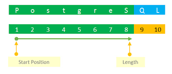

String Functions
String Functions
2026-01-16
Text Functions
Text (string) functions operate at the row level and are used to inspect, clean, standardize, and transform textual data.
They are data quality tools, not cosmetic helpers.
From Session 4
Run Docker
Open Docker Desktop, Run and open Pgadmin:
Create sales_analysis
DROP TABLE IF EXISTS sales_analysis;
CREATE TABLE sales_analysis AS
SELECT
s.transaction_id,
o.order_date,
DATE(o.order_date) AS order_date_date,
o.year,
o.quarter,
o.month,
c.customer_name,
c.city,
c.zip_code,
p.product_name,
p.category,
p.price,
e.first_name AS employee_first_name,
e.last_name AS employee_last_name,
e.salary AS employee_salary,
s.quantity,
s.discount,
s.total_sales
FROM sales AS s
JOIN orders AS o
ON s.order_id = o.order_id
JOIN customers AS c
ON s.customer_id = c.customer_id
JOIN products AS p
ON s.product_id = p.product_id
LEFT JOIN employees AS e
ON s.employee_id = e.employee_id;Indexes for Filtering Performance
Text Functions | Analytical Reality
Real-world text data is rarely clean:
- inconsistent casing
- extra spaces
- annotations and symbols
- mixed formats
- partial or malformed values
If left untreated:
GROUP BYfragments categoriesCOUNT(DISTINCT ...)overcounts- joins silently fail
- KPIs drift across dashboards
Workflow
Correct analytical order:
- inspect
- measure
- classify
- clean
- validate
- aggregate
We always start with measurement, not transformation.
Dummy Setup
Raw Phone Numbers
We use a controlled dummy table with deliberately inconsistent phone formats.
DROP TABLE IF EXISTS customers_raw_text;
CREATE TABLE customers_raw_text (
customer_id INTEGER,
first_name TEXT,
last_name TEXT,
raw_phone TEXT,
category_raw TEXT,
birth_date DATE
);
INSERT INTO customers_raw_text (
customer_id,
first_name,
last_name,
raw_phone,
category_raw,
birth_date
) VALUES
(1, 'joHN', 'doE', ' 077600945 ', 'Accessories (Promo)', DATE '1994-03-12'),
(2, 'MARY', 'sMiTh', '077-600-045', 'Electronics (Old)', DATE '1988-11-05'),
(3, 'aLEx', 'johnSON', '(374)-77-600-945', 'Accessories', DATE '2001-07-23'),
(4, 'anna', 'VAN DYKE', '37477600945', 'Electronics (Promo)', DATE '1999-01-30'),
(5, NULL, 'brOwn', '77600945', 'Accessories (Test)', DATE '1994-03-12');Target Standard
Our target standardized phone number is: 77600945
LENGTH()
What It Does
LENGTH() returns the number of characters in a text value.
It is a diagnostic function, not a cleaning function.
Analytical Question
Before cleaning, we ask:
Do all values have the same length?
If not, they cannot be directly comparable.
Inspecting the Data
\[\downarrow\]
| raw_phone | phone_length |
|---|---|
' 077600945 ' |
13 |
'077600945' |
9 |
'77600945' |
8 |
'077-600-045' |
11 |
'(374)-77-600-945' |
15 |
'37477600945' |
11 |
Interpretation
Even without cleaning, patterns emerge:
- 8 characters → already standardized
- 9 characters → leading zero
- 11 characters → country code or separators
- 13+ characters → whitespace and symbols
What We Just Learned
Without modifying data, we detected:
- whitespace issues
- formatting symbols
- country prefixes
- multiple structural patterns
This prevents blind transformations later.
Why This Is Critical
Using LENGTH() early allows you to:
- detect malformed rows
- classify data quality patterns
- design targeted cleaning rules
- avoid one-size-fits-all logic
Analytical Insight
- the target
77600945has a known expected length - this becomes a post-cleaning validation rule
- any row failing this rule is still dirty
TRIM()
Why TRIM() Matters
Whitespace issues are:
- visually invisible
- common in manual or legacy inputs
- a frequent cause of failed joins and false duplicates
Yet they are often overlooked in analysis.
Analytical Principle
Whitespace has no business meaning.
- removing it does not change semantics
- but significantly improves comparability
This makes TRIM() a safe first transformation.
Applying TRIM
\[\downarrow\]
| raw_phone | length | trimmed_phone | trimmed_length |
|---|---|---|---|
' 077600945 ' |
13 | '077600945' |
9 |
'077600945' |
9 | '077600945' |
9 |
'77600945' |
8 | '77600945' |
8 |
'077-600-045' |
11 | '077-600-045' |
11 |
'(374)-77-600-945' |
15 | '(374)-77-600-945' |
15 |
'37477600945' |
11 | '37477600945' |
11 |
LTRIM vs RTRIM
SQL also provides directional variants:
TRIM() is equivalent to applying both.
Analytical Insight
TRIM() helps us decide:
- which rows were only cosmetically broken
- which rows require structural cleaning
- how many patterns remain
Measurement → transformation → re-measurement
Try Yourself
- Apply
LTRIM(raw_phone) - Apply
RTRIM(raw_number)
LOWER(), UPPER(), INITCAP()
Why Case Normalization Matters
Text values often differ only by capitalization, even though they represent the same entity.
From an analytical perspective:
- capitalization has no business meaning
- SQL treats differently cased strings as different values
- this leads to fragmented groups and incorrect counts
Case Normalization | The Problem
Examples of equivalent values treated as different:
john,John,JOHNvan dyke,Van Dyke,VAN DYKE
If left untreated:
GROUP BYfragments categoriesCOUNT(DISTINCT ...)overcounts- joins silently fail
LOWER() | Normalize for Analysis
LOWER() converts all characters to lowercase.
\[\downarrow\]
| first_name | first_name_lower |
|---|---|
john |
john |
ANNa |
anna |
mARy |
mary |
geORGe |
george |
ALEx |
alex |
lAuRA |
laura |
UPPER() | Normalize for Codes
UPPER() converts all characters to uppercase.
\[\downarrow\]
| last_name | last_name_upper |
|---|---|
DOE |
DOE |
smith |
SMITH |
joHNson |
JOHNSON |
brown |
BROWN |
O'NEILL |
O'NEILL |
van dyke |
VAN DYKE |
INITCAP() | Presentation Formatting
INITCAP() converts text to title case: jOhn sMiTH \(\rightarrow\) John Smith
\[\downarrow\]
| first_name | first_name_clean |
|---|---|
john |
John |
ANNa |
Anna |
mARy |
Mary |
geORGe |
George |
ALEx |
Alex |
lAuRA |
Laura |
Choosing the Right Function
| Function | Best Used For |
|---|---|
LOWER() |
joins, grouping, deduplication |
UPPER() |
codes, abbreviations |
INITCAP() |
names, presentation |
never mix raw and normalized text in analysis
Consistency matters more than preference.
REPLACE()
Why REPLACE() Matters
After handling whitespace and capitalization, the next common issue is structural noise inside text values.
Typical examples include:
- hyphens in phone numbers:
077-600-945 - spaces used as separators:
077600945
- dots (
.), slashes(\,/), or underscores:
- inconsistent formatting characters
Analytical Principle
REPLACE() removes or substitutes known, explicit characters.
This makes it ideal when:
- the pattern is simple
- the character to remove is known in advance
- rules are deterministic
REPLACE() is not pattern-based > it is literal and predictable.
Removing Hyphens
Phone numbers often contain hyphens as visual separators.
\[\downarrow\]
| raw_phone | phone_no_hyphen |
|---|---|
077-600-045 |
077600045 |
(374)-77-600-945 |
(374)77600945 |
077600945 |
077600945 |
Chaining Replacements
You can apply REPLACE() multiple times to remove different characters.
\[\downarrow\]
| raw_phone | phone_clean_partial |
|---|---|
(374)-77-600-945 |
37477600945 |
077-600-045 |
077600045 |
077600945 |
077600945 |
This is progress, but still not fully standardized.
Why We Stop Here
At this stage:
- separators are removed
- formatting noise is reduced
- but digits are not guaranteed
We still have:
- country codes
- variable lengths
- inconsistent prefixes
This tells us REPLACE() alone is not sufficient.
REPLACE() | Analytical Warning
Every REPLACE() encodes a business assumption.
- what characters are allowed?
- what characters are noise?
- what if formats change later?
Document these decisions!
REPLACE() | When to Use
Use REPLACE() when:
- the character to remove is known
- rules are simple and explicit
- you want maximum transparency
Avoid REPLACE() when:
- patterns vary
- rules depend on position
- you need validation
REGEXP_REPLACE()
REGEXP_REPLACE() | Why It Exists
REGEXP stands for “Regular Expression”
REGEXP_REPLACE() allows you to define rules, not characters.
REGEXP_REPLACE() | Why It Matters
From an analytical perspective:
- fewer hard-coded assumptions
- better generalization to unseen formats
- robust, reusable cleaning logic
REGEXP_REPLACE() | Syntax
text→ input stringpattern→ regex rulereplacement→ substitutionflags→ modifiers (g= global)
Example 1 | Keep Only Digits
Pattern: [^0-9]
\[\downarrow\]
| raw_phone | digits_only |
|---|---|
077600945 |
077600945 |
077600945 |
077600945 |
77600945 |
77600945 |
077-600-045 |
077600045 |
(374)-77-600-945 |
37477600945 |
37477600945 |
37477600945 |
Example 2 | Parentheses in Categories
Pattern 1 | Remove () Content
Pattern: \([^)]*\)
\[\downarrow\]
| category_raw | category_clean1 |
|---|---|
| Accessories (Promo) | Accessories |
| Electronics (Old) | Electronics |
| Accessories | Accessories |
| Electronics (Promo) | Electronics |
| Accessories (Test) | Accessories |
Whitespace Alert
Trailing spaces may remain
'Accessories ' ≠ 'Accessories'
Pattern 2 | REGEXP_REPLACE
\[\downarrow\]
| category_raw | category_clean2 |
|---|---|
| Accessories (Promo) | Accessories |
| Electronics (Old) | Electronics |
| Accessories | Accessories |
| Electronics (Promo) | Electronics |
| Accessories (Test) | Accessories |
Pattern 3 | Single-Step Regex
Pattern: \s*\(.*?\)
\[\downarrow\]
| category_raw | category_clean3 |
|---|---|
| Accessories (Promo) | Accessories |
| Electronics (Old) | Electronics |
| Accessories | Accessories |
| Electronics (Promo) | Electronics |
| Accessories (Test) | Accessories |
Comparison Summary
| Approach | Result | Notes |
|---|---|---|
| Pattern 1 | Accessories |
Leaves spaces |
| Pattern 2 | Accessories |
Safe & explicit |
| Pattern 3 | Accessories |
Compact regex |
REGEXP vs REPLACE
| Scenario | Prefer |
|---|---|
| Known characters | REPLACE() |
| Variable formats | REGEXP_REPLACE() |
| Validation & extraction | REGEXP_REPLACE() |
| Simplicity | REPLACE() |
REGEXP_REPLACE() | ATTENTION
Analytical Warning | Regex Is Powerful
- broad patterns remove valid data
- unreadable regex creates technical debt
- rules must be documented and validated
Always validate with:
LENGTH()COUNT(DISTINCT ...)
SUBSTRING()
SUBSTRING()
SUBSTRING() | Basic Positional Extraction
SUBSTRING() extracts a portion of text based on position or pattern.
It is used to isolate signal from compound fields.
Example 1 | Extract Last 8 Digits of Phone Numbers
\[\downarrow\]
| raw_phone | phone_core |
|---|---|
077600945 |
77600945 |
37477600945 |
77600945 |
77600945 |
77600945 |
Example 2 | SUBSTRING() with Fixed Structure
\[\rightarrow\]
| category_raw | category_prefix |
|---|---|
| Accessories (Promo) | Accessories |
| Electronics (Old) | Electronics |
| Accessories | Accessories |
| Electronics (Promo) | Electronics |
| Accessories (Test) | Accessories |
Example 3 | SUBSTRING() with Regex
PostgreSQL supports regex-based extraction:
\[\downtarrow\]
| raw_phone | first_digit_sequence |
|---|---|
077600945 |
077600945 |
077-600-045 |
077 |
(374)-77-600-945 |
374 |
37477600945 |
37477600945 |
77600945 |
77600945 |
Positional vs Pattern-Based SUBSTRING()
| Use Case | Prefer |
|---|---|
| Fixed-length identifiers | Positional |
| Variable formats | Regex-based |
| Performance-critical logic | Positional |
| Unknown structure | Regex-based |
Analytical Best Practice
- use positional
SUBSTRING()when formats are stable - use regex
SUBSTRING()when formats vary - validate results with
LENGTH()andCOUNT(DISTINCT ...)
CONCAT() and ||
CONCAT() | Why It Exists
After cleaning text with:
TRIM()LOWER(),UPPER(),INITCAP()SUBSTRING()
we often need to construct new text values.
CONCAT() and || allow us to combine atomic fields into meaningful analytical dimensions.
CONCAT() | Why It Matters
From an analytical perspective:
- reporting requires combined labels
- dashboards need human-readable dimensions
- joins may rely on constructed keys
Concatenation is feature engineering, not cosmetic formatting.
CONCAT() | Syntax
Key properties:
- accepts multiple arguments
- treats
NULLas empty - always returns text
CONCAT() | Operator Form ||
PostgreSQL also supports string concatenation using:
Behavior differs when NULL values are present.
Example 1 | Full Name Construction (Raw)
\[\downarrow\]
| customer_id | first_name | last_name | full_name |
|---|---|---|---|
| 1 | john | doe | john doe |
| 2 | MARY | SMITH | MARY SMITH |
| 3 | aLEx | johnson | aLEx johnson |
| 4 | anna | VAN DYKE | anna VAN DYKE |
| 5 | NULL | brown | brown |
Analytical Observation
- concatenation works mechanically
- capitalization is inconsistent
- leading spaces appear when
first_nameisNULL
This output is technically valid but analytically weak.
Example 2 | CONCAT() + INITCAP()
Recommended analytical pattern: first normalize case and then concatenate
\[\downarrow\]
| customer_id | first_name_clean | last_name_clean | full_name_clean |
|---|---|---|---|
| 1 | John | Doe | John Doe |
| 2 | Mary | Smith | Mary Smith |
| 3 | Alex | Johnson | Alex Johnson |
| 4 | Anna | Van Dyke | Anna Van Dyke |
| 5 | NULL | Brown | Brown |
CONCAT() vs ||
Same logic using the operator form:
Key Difference
CONCAT()treatsNULLas empty||propagatesNULL
This distinction directly affects analytical results.
When to Use Which
| Situation | Prefer |
|---|---|
| Possible NULL values | CONCAT() |
| Strict NULL propagation | || |
| Reporting and dashboards | CONCAT() |
| Validation logic | || |
Analytical Best Practice
- normalize text before concatenation
- decide explicitly how
NULLshould behave - validate constructed fields using:
COUNT(DISTINCT ...)- sample inspection
POSITION() / STRPOS()
POSITION() / STRPOS() | What Problem It Solves
Where does a given substring start?
This is a diagnostic and validation step, not a cleaning step.
POSITION() / STRPOS() | Why It Matters
Knowing the position of a substring allows you to:
- validate expected formats
- detect malformed values
- drive conditional logic
- prepare for controlled extraction
POSITION() | Syntax
- returns a 1-based position
- returns
0if the substring is not found
STRPOS() | PostgreSQL Alias
PostgreSQL also supports:
- identical behavior to
POSITION() - often preferred for readability
Example 1 | Detect Parentheses in Categories
Before cleaning categories, we first detect annotations.
\[\downarrow\]
| category_raw | open_paren_pos |
|---|---|
| Accessories (Promo) | 13 |
| Electronics (Old) | 13 |
| Accessories | 0 |
| Electronics (Promo) | 13 |
| Accessories (Test) | 13 |
Interpreting the Result
open_paren_pos > 0→ annotation exists
open_paren_pos = 0→ clean category
This tells us which rows require cleaning.
Example 2 | STRPOS() for Phone Diagnostics
\[\downarrow\]
| raw_phone | hyphen_pos | paren_pos |
|---|---|---|
077600945 |
0 | 0 |
077-600-045 |
4 | 0 |
(374)-77-600-945 |
6 | 1 |
37477600945 |
0 | 0 |
77600945 |
0 | 0 |
Analytical Interpretation
Note
This check is usually done before applying REGEXP_REPLACE().
POSITION() as a Validation Tool
A common analytical pattern is converting positions into boolean flags.
\[\downarrow\]
| customer_id | category_raw | has_annotation |
|---|---|---|
| 1 | Accessories (Promo) | true |
| 2 | Electronics (Old) | true |
| 3 | Accessories | false |
| 4 | Electronics (Promo) | true |
| 5 | Accessories (Test) | true |
Why This Pattern Is Powerful
This enables:
- data quality reporting
- audit checks
- conditional cleaning logic
Without altering the original data.
POSITION() vs SUBSTRING()
| Question | Prefer |
|---|---|
| Where is it? | POSITION() / STRPOS() |
| Extract it | SUBSTRING() |
| Validate format | POSITION() |
| Clean text | REGEXP_REPLACE() |
Analytical Best Practice
- use
POSITION()to measure and detect - use
SUBSTRING()to extract - use
REGEXP_REPLACE()to clean - never assume structure without checking positions
SPLIT_PART()
SPLIT_PART() | What Problem It Solves
SPLIT_PART() allows you to extract a specific segment from such strings
without using regular expressions.
It answers the question:
Which part of a delimited string do I need?
SPLIT_PART() | Why It Exists
Used to extract a specific segment from delimited text.
Known structure → simple logic → high reliability.
SPLIT_PART() | Syntax
- position is 1-based
- missing part → empty string
Example 1 | First Segment
| raw_phone | first_part |
|---|---|
077-600-045 |
077 |
(374)-77-600-945 |
(374) |
77600945 |
77600945 |
Example 2 | Second Segment
| raw_phone | second_part |
|---|---|
077-600-045 |
600 |
(374)-77-600-945 |
77 |
77600945 |
SPLIT_PART() | ATTENTION
- empty string ≠ NULL
- delimiter may not exist
- structure must be validated
Use together with:
POSITION()NULLIF()
NULLIF()
NULLIF() | Why It Exists
Real-world data often encodes missing information as fake values.
NULLIF() lets you explicitly decide:
When should a value be treated as missing?
NULLIF() | Why It Matters
From an analytical perspective:
- placeholder values distort metrics
- empty strings inflate counts
- fake defaults hide data quality issues
NULLIF() restores semantic correctness.
NULLIF() | Syntax
- returns
NULLif values are equal
- otherwise returns the original value
Example 1 | Empty Strings to NULL
\[\downarrow\]
| customer_id | last_name | last_name_clean |
|---|---|---|
| 1 | doe | doe |
| 2 | smith | smith |
| 3 | johnson | johnson |
| 4 | VAN DYKE | VAN DYKE |
| 5 | NULL |
Why This Matters
Without NULLIF():
- empty strings count as real values
COUNT(DISTINCT last_name)is wrong
- completeness checks are misleading
Example 2 | Placeholder Values
\[\downarrow\]
| category_raw | category_clean |
|---|---|
| Accessories | Accessories |
| UNKNOWN | NULL |
Example 3 | NULLIF() Before Aggregation
This prevents placeholder values from inflating KPIs.
NULLIF() with CONCAT()
Avoids malformed labels caused by empty strings.
NULLIF() vs COALESCE()
| Goal | Function |
|---|---|
| Convert bad value to NULL | NULLIF() |
| Replace NULL with value | COALESCE() |
| Restore missing meaning | NULLIF() |
| Impute values | COALESCE() |
Analytical Best Practice
- audit text fields for placeholders
- convert fake values to
NULLfirst
- aggregate only meaningful values
LEFT() / RIGHT()
LEFT() / RIGHT() | Why They Exist
Some analytical fields follow a fixed directional structure.
- prefixes carry meaning
- suffixes carry meaning
- length is known or enforced
LEFT() and RIGHT() let you extract directional segments without complex logic.
LEFT() / RIGHT() | Why They Matter
From an analytical perspective:
- simpler than
SUBSTRING()
- more readable intent
- safer for fixed-format fields
They are often used for:
- country or region prefixes
- category codes
- version suffixes
- short identifiers
LEFT() / RIGHT() | Syntax
n= number of characters
- extraction starts from left or right
Example 1 | Phone Prefix Detection
\[\downarrow\]
| raw_phone | phone_prefix |
|---|---|
077600945 |
077 |
077-600-045 |
077 |
(374)-77-600-945 |
374 |
37477600945 |
374 |
77600945 |
776 |
Analytical Interpretation
- prefixes reveal country or operator
- supports validation and routing logic
- useful before normalization
Example 2 | Core Identifier via RIGHT()
\[\downarrow\]
| raw_phone | phone_core |
|---|---|
077600945 |
77600945 |
37477600945 |
77600945 |
77600945 |
77600945 |
LEFT()/RIGHT() vs SUBSTRING()
| Scenario | Prefer |
|---|---|
| Fixed prefix/suffix | LEFT()/RIGHT() |
| Dynamic positions | SUBSTRING() |
| Readability | LEFT()/RIGHT() |
| Complex extraction | SUBSTRING() |
In-Class Assignment
Goal of the Exercise
In this in-class task, you will work with intentionally messy transaction data to understand:
how dirty text breaks
GROUP BYwhy measurement must come before cleaning
how text functions affect analytical results
Time: 10–15 minutes
Mode: Individual or pairs
Step 1 | Create Messy Transaction Data
We simulate real-world dirty text commonly found in transactional systems.
Step 2 | Insert 1,000 Rows of Messy Data
INSERT INTO transactions_text_demo
SELECT
gs AS transaction_id,
(RANDOM() * 200)::INT + 1 AS customer_id,
CASE (gs % 6)
WHEN 0 THEN ' 077600945 '
WHEN 1 THEN '077-600-045'
WHEN 2 THEN '(374)-77-600-945'
WHEN 3 THEN '37477600945'
WHEN 4 THEN '77600945'
ELSE '077600945'
END AS raw_phone,
CASE (gs % 5)
WHEN 0 THEN 'Accessories (Promo)'
WHEN 1 THEN 'Accessories (Test)'
WHEN 2 THEN 'Electronics (Old)'
WHEN 3 THEN 'Electronics (Promo)'
ELSE 'Accessories'
END AS category_raw,
(RANDOM() * 5)::INT + 1 AS quantity,
(RANDOM() * 500 + 10)::NUMERIC(10,2) AS price
FROM generate_series(1, 1000) AS gs;Step 3 | Sanity Check
Think:
- Do these numbers look reasonable?
- What already looks suspicious?
Task 1 | Phone Number Diagnostics
Write a query that shows:
raw_phoneLENGTH(raw_phone)- position of
'-' - position of
'(' - number of rows per pattern
Functions to use:
LENGTH()POSITION()orSTRPOS()GROUP BY
Task 2 | Category Fragmentation
Group by raw category values.
Answer:
- how many categories appear?
- how many are actually the same category?
Expected Insights
By the end of this exercise, you should clearly see:
- the same phone number appears in many formats
- category annotations fragment grouping
GROUP BYblindly trusts text values- dirty text leads to misleading KPIs
Key Analytical Lesson
- text cleanliness is not cosmetic
- it directly affects:
- counts
- revenue aggregation
- uniqueness
- cleaning must be intentional and documented
Next, we will clean this data and measure how KPIs change.